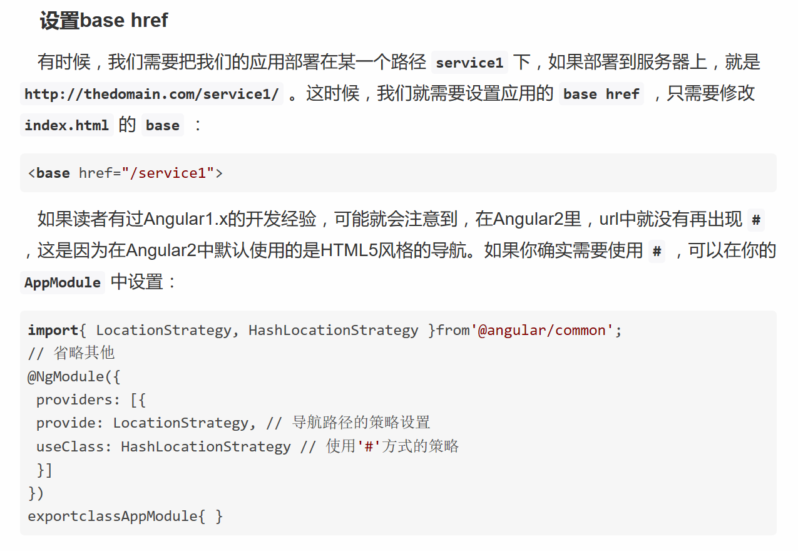
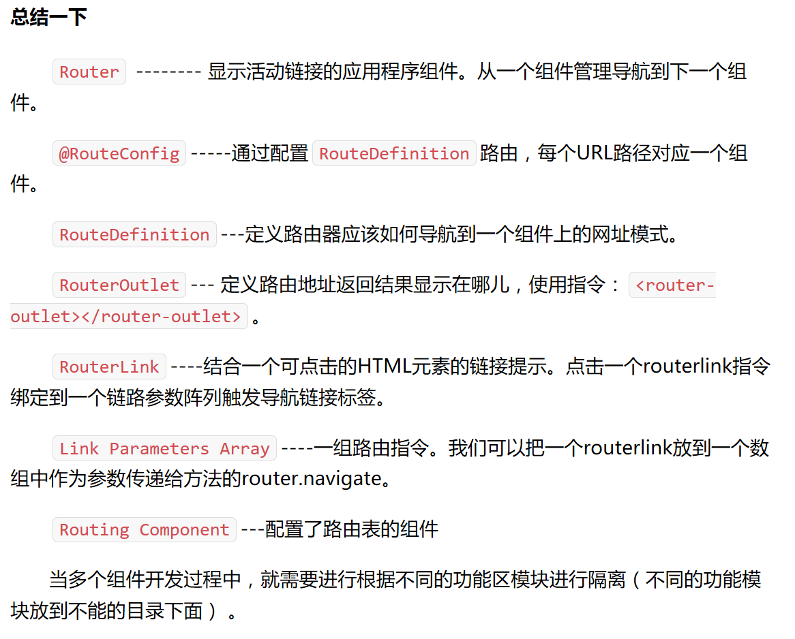

<h1>
  {{title}}
</h1>

<div>
	<h1>路由</h1>
	<!--使用RouterLink指令添加链路到路由。-->
<!--
	RouterLinkActive指令会给激活的路由绑定动态class，通过设置class样式即可设置激活的路有链接的样式。但是当页面跳到其他路由后失去class样式。
-->
	<a [routerLink]="['/home']" routerLinkActive="active">home</a>
	<a [routerLink]="['/about']" routerLinkActive="active">About</a>
	<a [routerLink]="['/setting']" routerLinkActive="active">contact</a>
	
	
	<!--router-outlet来作为载入点。-->
	<router-outlet></router-outlet>
	

	<h1>href 导航</h1>
	<a href="/home" >home</a>
	<a href="/about" >about</a>
	<a href="/setting" >setting</a>
	
	
	
	<h1>routerlink 导航</h1>
	<a routerLink="/home" routerLinkActive="active">home</a>
	<a routerLink="/about" routerLinkActive="active">About</a>
	<!--按钮也可以-->
	<button routerLink="/setting" routerLinkActive="active">setting</button>
	
	
	<h1>代码中导航</h1>
	<button (click)='home()'>home</button>
	<button (click)='about()'>about</button>
	<button (click)='setting()'>setting</button>
	
	<h1>路由传参</h1>
	
	<!--添加参数的路由-->
	<a [routerLink]="['/home','123']" routerLinkActive="active">home</a>
	
	<!--灵活的参数-->
	<a [routerLink]="['/about',user.name]" routerLinkActive="active">About</a>
	
	<!--如果，要传递的参数是这种/setting?id=12&type=important方式，也很简单：-->
	<a [routerLink]="['/setting']" [queryParams]="{id: user.id, type: 'important'}" routerLinkActive="active">contact</a>
	
	
	<h1>设置base href</h1>
	
	
	
	
</div>
